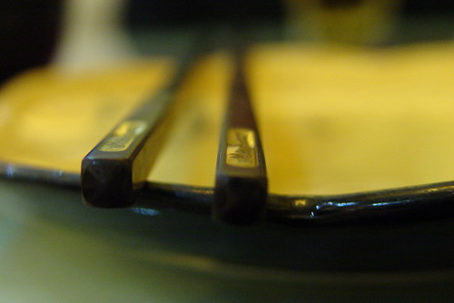
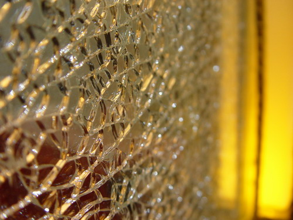

@save some love for me @ Dec 02, 2005
被朋友描述“独立坚强...比较硬”，一旦形象如此必然没得便宜占，博取同情未必不好，如今弱者被授予的更多，不过不是自己争取来的会有多珍惜呢？我问他是否如朋友所说的独立和坚强？他持相反意见，认为：脆弱，感性，晚熟，心智也比实际年龄要幼稚。
晚饭后拍了些片子，骤冷的天气，避闪不及，穿着裙子在寒冷中瑟瑟发抖，体会着早期的圣诞气氛。






shot by Christina
Sony F717
@1912 Nanjing
12 Responses to “@save some love for me”
2005-12-02
这三张图片拍得好漂亮!
2005-12-03
我说的是表象,而他说的是内象
2005-12-03
表象也未必是不真实的,人的情绪有时也是分时间阶段来表现的
2005-12-03
PIC
VERY GOOD FEELING
2005-12-03
喜欢第3张
2005-12-03
我喜欢第二张，是因为我喜欢女人做饭，你要多干家务呀
2005-12-03
国内也有圣诞树卖了吗？奇怪地说，看见人家摆着圣诞树，竟然生出亲切，可俺4中国丫……？
通过chris的文，偶是明白了——人前人后差别总是如此，他亦说“你的美丽都留给了外人，难看全给家里。”
性格也如此，父母、爱人面前总是孩子，外人哪怕相近朋友都以为自己多么冷静的一个年轻女子。
其实并不矛盾，以为都是真实的我们。
2005-12-04
写意...
2005-12-04
1912 距离较远，百姓人家似乎近些。有时格调与距离成正比。
2005-12-08
抱歉打扰了你这里的清静，
请问你这几张照片，用的是什么相机，，只能看到是sony，但不知是哪一款，
你的照片一直都很不错，关注许久了，也收藏了你的一些片子，见谅。
2005-12-08
shot by Christina
Sony F717
@1912 Nanjing
刚看到，冒昧了，我的留言，影响了你blog的风格意境，删除吧，，
2005-12-08
喜欢彩色，喜欢第4张
Leave A Reply
存档只读，评论已关闭。